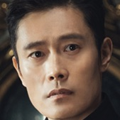
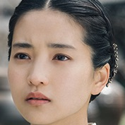
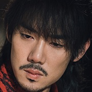
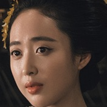
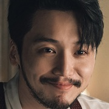
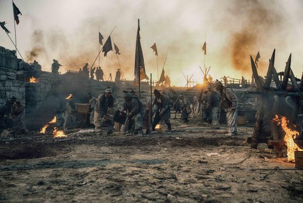

Mr. Sunshine centres on a young boy (Lee Byung-hun) who is born into slavery but escapes to the United States after a traumatic event.
He becomes a United States Marine Corps officer and returns to Joseon during the 1871 Shinmiyangyo (U.S. expedition to Korea).
While in Joseon, he meets and falls in love with an aristocrat's daughter (Kim Tae-ri), who is part of the Righteous Army.
At the same time, he discovers a plot by foreign forces to colonize Korea and soon, he becomes embroiled in the fight for Joseon’s independence.
Details
Mr. Sunshine (Korean: 미스터 션샤인; Miseuteo Syeonsyain) is a 2018 South Korean television series written by Kim Eun-sook and directed by Lee Eung-bok, starring Lee Byung-hun, Kim Tae-ri, Yoo Yeon-seok, Kim Min-jung and Byun Yo-han.
The series is set in Hanseong (the former name of Seoul) in the early 1900s, and focuses on activists fighting for Korea's independence.
The series aired every Saturday and Sunday on tvN starting from , and ended on . It premiered internationally on Netflix. As of it is the fourth-highest-rated Korean drama in cable television history.
Mr. Sunshine recorded the 5th highest ratings for cable television with its final episode reaching 18.129% and netting an average rating of 12.955%, which is currently the highest average rating ever recorded for cable television. The Seoul rating of 21.828% is the second-highest ever recorded for cable television.
It received critical acclaim for its cinematography and storytelling. Critics praised the drama for its deep storytelling and its ability to raise viewers' awareness of history.
The Korea Times applauded the drama for shedding light on those deemed peripheral in society, such as women and the lower classes, and for successfully laying out contradictions and hope in the fast-evolving late Joseon period; it also praised the shows strong female characters.
Mr. Sunshine won the Drama of the Year award at the 6th APAN Star Awards, as well as Grand Prize for Lee Byung-hun.
Cast
Eugene Choi(이변헌)
A Joseon-born slave whose parents were killed by their landlord. He escapes to the United States with the help of a missionary and returns to Joseon as a Captain of the U.S Marine Corps and the acting consul for the United States. To his dismay, he is treated as a Korean in America but as an American in Joseon. He falls in love with a Noblewoman and gets entangled in a complicated relationship.

Go Ae-Shin(김태리)
Eugene’s immediate love interest who was born into Joseon’s elite and disguises herself as a man to be a vigilante sniper for the Korean resistance. Ae-shin becomes still more interesting when she finds herself trapped between wanting to protect her homeland and feeling ashamed of it—Eugene says to her when he finally reveals his origins, This Joseon you are trying to protect. Who is it for? What does it mean to fight to free your country when not all citizens of your country are free?

Gu Dong-Mae(유연석)
A son of a butcher who flees to Japan upon his parent's death and becomes a fearless samurai and member of the Musin society, which is part of a Yakuza group. As a teen, he was helped by young Go Ae-shin and for that, he is grateful and has deep affection for her.

Kudo Hina(김민정)
An influential widow who runs a hotel in Joseon. She was married off to an old, rich Japanese man for money by her father. Upon her husband's mysterious death, she inherited the Glory Hotel and successfully operates it on her own. She is the daughter of Lee Wan-ik.

Kim Hee-Sung(병요)
A Joseon nobleman who is considered to be the richest after the Emperor in terms of land ownership. He is emotionally tormented by his grandfather's actions and lives over a decade in Japan to avoid marrying the woman his grandfather chose for him. Once Hee-sung returns to Joseon, however, he discovers that his fiancé is Go Ae-shin and falls for her, only to realize that there is no place left for him in her heart.

Production
The series is the third collaboration between writer Kim Eun-sook and director Lee Eung-bok, after Descendants of the Sun (2016) and Guardian: The Lonely and Great God (2016).
The drama marks film actress Kim Tae-ri's small-screen debut.
The drama was first pitched by Studio Dragon to SBS, but the latter passed on the project due to financial and advertising constraints.
Kim Sa-rang was originally cast in the series, but backed out in February 2018 due to scheduling conflicts. She was replaced by Kim Min-jung.
Filming began in September 2017 and took place in various parts of Korea including Busan, Daegu, Gokseong, Gyeongju and Hapcheon. Several sets solely devoted to the early 1900s setting of Korea was built on a 20,000 sq.m site in Nonsan, South Chungcheong Province, and another 6,600 a 20,000 sq.m site indoor set in Daejeon. 1000 extras were hired for a battle scene.
This was originally planned in 2009 to be a sports-themed period drama set in the 1920s and 1930s, also featuring an American lead character. Shin Woo-chul, Kim Eun-sook's collaborator for the Lovers trilogy, was attached to be the director at the time.

Sunshine Land
Most of the important scenes in Mr. Sunshine were filmed in this location. First is the majestic Glory Hotel, the official hangout and residence for Eugene Choi (Lee Byung Hun) and Kim Hee Seong (Byun Yo-han) owned by the fierce Kudo Hina (Kim Min Jung). Second is the market area where the boulangerie is from the first time Goo Dong Mae (Yoo Yeon Seok) sees Go Ae-shin (Kim Tae-ri) since they were children. It also features the bridge where Eugene Choi and Go Ae-shin meet for the first time during the night of the assassination of an American minister. The scenes that feature Hwalollu (Japanese bar where the three men would meet and drink), the pawnshop owned by the two former slavehunters, Go Ae-shin’s residence, and the first ever railway car in Hanseong, and many more.
Sunshine Studio [논산 선샤인랜드], officially opened on 2018’s New Years Day, is a colonial-era film set built for and named after Mister Sunshine. It is attached to and part of (Nonsan) Sunshine Land, which is a sort of amusement park centered around the military consisting of a survival game set, a military experience center and a 1950s open film set called ‘Sudden Attack Studio.’ South Korea’s largest military training center, the Korea Army Training Center [육군훈련소], sits right opposite of Sunshine Land, which is located in the village Hwanghwajeong [Hwanghwajeong-ri/황화정리] in Nosan’s township Yeonmu [Yeonmu-eup/연무읍].